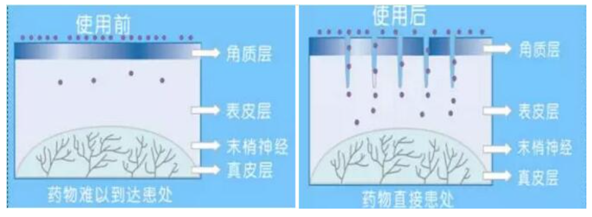

纳晶纳米晶片的原理
高效促渗纳晶纳米晶片接触的皮肤时，在数平方毫米的面积上，打开数百个通道，10倍以上提高吸收能力，使我们的营养物质快速渗透。

无痛无创纳晶纳米晶片是微针的升级版，比微针还小一千倍。触肤点小于80纳米，高度为120μm，而皮肤的表皮层平均厚度为200μm。也就是说纳晶纳米晶片能够打开坚韧的角质层，但接触不到真皮层和丰富的皮下神经，所以不会产生痛感和创伤，而且通道20分钟就会关闭，非常安全。
自从纳晶纳米晶片问世以来，该产品已经获得11项中外发明专利授权，并多次获中外大奖，被央视，法国电视台，华尔街日报，Forbes 等作过专题报道。什么是纳晶水光？纳晶水光治疗采用国际最新的纳米晶体技术，在皮肤表面形成每个约80-200纳米的微通道，可以将修复皮肤的医疗药物和无菌玻尿酸等定点导入皮下深层，达到快速安全有效治疗和补水的作用。
什么是纳米晶片？纳米晶片由100个比头发丝还小1000倍的点组成，是根据人体皮肤结构设计的纳米促渗工具。
“纳晶水光”治疗的优势
医生个性化设计：
通过肤美婷医生个性化设计的皮肤美白和屏障修复配方，加上纳米晶体的纤细微针,整个治疗护理无需麻药、基本无痛、无针眼。
吸收率高：
加上促进药物和水分的吸收，对黄褐斑、干性皮肤、敏感肌肤等皮肤问题起到积极的治疗作用，比常规涂抹的吸收率要提高10倍以上。
快速安全：
10-15分钟即完成治疗和护理，20分钟皮肤基本恢复，无休工期，对工作生活无影响。纳晶水光治疗一经推出，就受到了纳晶粉们的青睐，小红（匿名，为什么叫小红？因为小婷小时候写作文习惯了~）两侧脸颊有比较明显的斑，在做了一次纳晶水光治疗后，肤色就有明显的提亮，斑也有淡化。并且本人说，做的时候并没有感觉明显的刺痛，就有一点刺刺麻麻的感觉，做完也基本没有红肿，相信治疗完一个疗程后皮肤会有更大的改善。